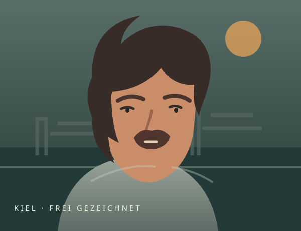
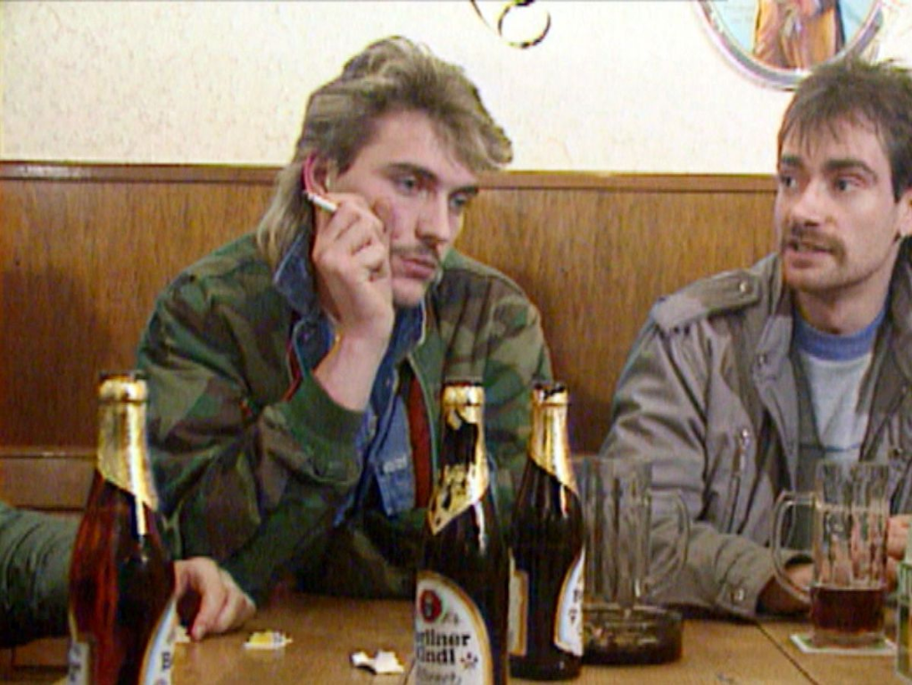
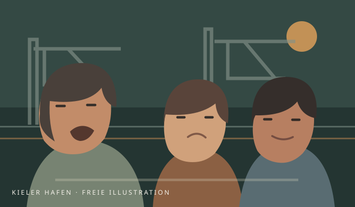
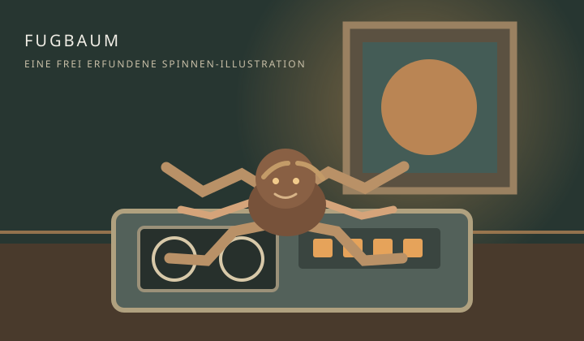
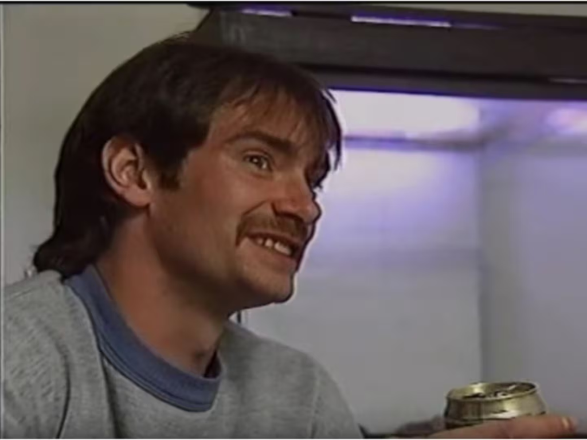
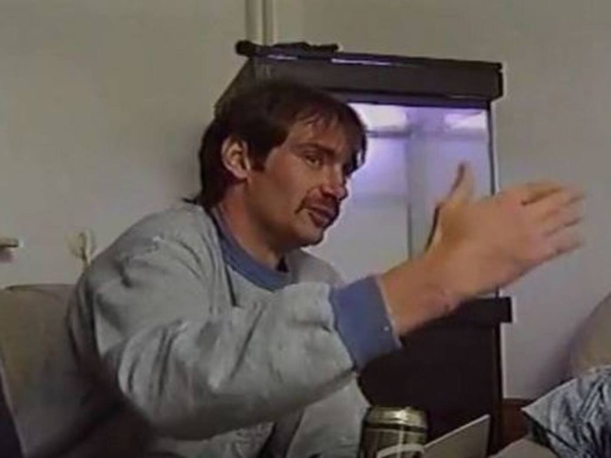

Ein Provinz-RPG
Bernd Knauer
Deine Straße. Deine Gang. Laboe ist fällich.
Mit Bernd unterwegs · frei erfundene Spielwelt
Ellerbek
★ Bild & Spruch · € Nebenjob · ♥ Pause · ⚑ Rivalen · ↔ Ortswechsel
Karte anklicken, dann WASD / Pfeiltasten zum Laufen, E / Leertaste zum Interagieren. Gebäude und Wasser sind nicht begehbar.
12 Szenenkarten · 4 vorhandene Fotomotive
Bernds Viertelalbum
Besuche die Sterne in allen vier Orten und interagiere mit ihnen: Jede neue Station bringt einmalig 5 XP und 5 €. Die Bilder werden für verschiedene Spielkarten wiederverwendet, nicht als neue historische Aufnahmen ausgegeben.
Vorhandene, vom Nutzer bereitgestellte Bilder. Quelle und Nutzungsrechte vor einer Veröffentlichung prüfen. Die Sprüche und Ortszuordnungen sind erfunden; die Fotos zeigen nicht die Stationen.
Kiel, Anfang der 90er
Die Figur hinter dem Mythos

Bernd Knauer (* 1965, † 13. November 2017) wurde durch Karl Siebigs Dokumentarfilm Youth Wars – Beobachtungen in der deutschen Provinz bekannt. Der Film von 1991 porträtiert die Kieler Jugend- und Straßenszene; Knauer ist darin als Mitglied der „Kneipenterroristen“ zu sehen.
Bis heute erinnern Filmvorführungen und Kieler Fankultur an die Doku und ihre markanten norddeutschen Dialoge. Das Spiel greift die Motive Clique, Revier und Selbstdarstellung frei auf. Die Spielszenen und Sprüche sind erfunden, keine Filmzitate und keine nachgestellten Ereignisse aus Knauers Leben.
Recherche: Kiel-Wiki: Bernd Knauer · Kiel-Wiki: Youth Wars · Holstein Kiel: Erinnerung der Fans
Der Auftrag
Die Vorherrschaft am Kanal
Zwischen Bushaltestelle und Bolzplatz wächst dein Ruf. Stell eine schlagkräftige Truppe zusammen, verdien dir Respekt und zeig den Laboe Blue Brothers, wem die Provinz gehört.
Ärger auf der Straße
Gegner
Endgegner
Laboe Blue Brothers
Sammle fünf Siege, dann kannst du ihren Anführer herausfordern.
Eine erfundene Episode
Die Kassette vom Kanal
Inspiriert von der Kieler Kulisse und den Motiven aus Youth Wars – frei erzählt, nicht als Biografie gemeint.

Kapitel 1 · Das Gerücht
Ein Abend, der kleben bleibt
Im fiktiven Viertel macht eine Nachricht die Runde: Eine alte Kassette mit Aufnahmen aus dem Freundeskreis soll im Jugendtreff gelandet sein. Bernd und die Clique ziehen los – mehr neugierig als kampflustig.

Kapitel 2 · Die Suche
Alle reden, keiner fragt
Am Kai erzählen drei Leute drei verschiedene Geschichten. Erst als Bernd alle ausreden lässt, stellt sich heraus: Die Kassette ist längst sicher verwahrt – und niemand hat sie überhaupt vermisst.

Kapitel 3 · Fugbaum
Ein kleiner Star im Glas
Zurück im Treff wird aus dem großen Aufbruch ein langer Küchentischabend. Fugbaum, die Vogelspinne aus der Geschichte, bekommt den besten Platz – und die Kassette bleibt erst einmal ungeöffnet.


Die drei Fotos wurden von dir bereitgestellt; Quelle und Nutzungsrechte bitte vor einer Veröffentlichung prüfen.
Was bisher geschah